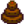
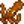

Garbage Can

- For the upgradeable garbage cans found in the player menu, see Trash Cans.
Garbage Cans can be found next to buildings in Pelican Town. If you "use" one (right-click on it), you can sometimes find a valuable item. There are eight garbage cans in total: The Stardrop Saloon, 1 River Road, the Mayor's Manor, 1 Willow Lane, 2 Willow Lane, the Blacksmith, the Museum and JojaMart/Movie Theater.
Garbage cans have predetermined contents each day. The chance for this predetermined item to drop is affected by daily luck. In addition, certain garbage cans have special drops which have a chance to replace the predetermined drop. This chance is partially affected by daily luck. The first reading of The Alleyway Buffet will increase the chance to find items by 20%.[1]
Garbage Cans will play an animation when interacted with. The top comes off briefly, revealing that the trash inside changes color with the seasons. A Garbage Can's lid may randomly pop off extra high and play an extra loud sound. In addition, if a Garbage Hat is found, the can's lid will make an exploding noise, and the lid will disappear for a period of time.

Spring, Summer, Fall, Winter
If you interact with a garbage can near any villager other than Linus, you will repulse the villager and lose 25 friendship points with them. The villager must be in a 15x15 square centered at your character to be offended. If Linus catches you digging through a Garbage Can, you will gain 5 friendship points with him.[2]
Linus' attitude towards digging through garbage cans is revealed in his 50-points heart event, but it rarely matters since (other than during the cutscene) he can only be seen in town one day a year, on Winter 15, walking to the Night Market.
Locations
Any Location
These items may be found in any location, at any time, during any Season.
| Item | Description | Sell Price |
|---|---|---|
| This can be planted to grow an oak tree. | ||
| A purple variant of quartz. | ||
| A crusty baguette. | ||
| A fairly common river fish that becomes active at night. | ||
| It's a JojaNet 2.0 trial CD. They must've made a billion of these things. | ||
| It looks like someone lost their glasses. They're busted. | ||
| A starchy snack found in caves. It helps miners work longer. | ||
| A resinous substance found near the surface. | ||
| A quick snack to fuel the hungry forager. | ||
| It's a garbage can lid 'upcycled' into a hat... | Cannot be sold | |
| It's really slimy. | ||
| The flagship product of Joja corporation. | ||
| A popular fish that lives in lakes. | ||
| This can be planted to grow a maple tree. | ||
| This can be planted to grow a pine tree. | ||
| A clear crystal commonly found in caves and mines. | ||
| A spotted mushroom sometimes found in caves. | ||
| It can be used in cooking. | ||
| This is trash. | ||
| Fairly common but still prized for its beauty. | ||
| It's junk. | ||
| Access a free supply of trash decorations. Wash hands after use. | Cannot be sold |
Museum
| Item | Description | Sell Price |
|---|---|---|
| A blacksmith can break this open for you. | ||
| A blacksmith can break this open for you. These geodes contain a wide variety of minerals. |
Blacksmith
| Item | Description | Sell Price |
|---|---|---|
| A combustible rock that is useful for crafting and smelting. | ||
| A common ore that can be smelted into bars. | ||
| A fairly common ore that can be smelted into bars. |
JojaMart
If an item is found in this Garbage Can, there is a chance that it will be one of the items listed below.
- If the Community Center completion ceremony has not taken place and the Joja Warehouse has not been built, there is a 20% chance that the item will be Joja Cola.
- If the Movie Theater is built, the item has a 5% chance of being a Movie Ticket and 15% chance of being Corn.
| Item | Description | Sell Price |
|---|---|---|
| The flagship product of Joja corporation. | ||
| One of the most popular grains. The sweet, fresh cobs are a summer favorite. | ||
| Movie Ticket | Admits one to the movie theater. Giving this to a friend invites them to the movies with you. |
1 River Road
This is the home of George, Evelyn, and Alex.
| Item | Description | Sell Price |
|---|---|---|
| Very chewy. |
The Saloon
The Stardrop Saloon's dish of the day can be found in its garbage can.
| Item | Description | Sell Price |
|---|---|---|
| A taste of the season. | ||
| Baked fish on a bed of herbs. | ||
| It sure is healthy. | ||
| It's subtle and refreshing. | ||
| It's bland and oily. | ||
| It smells great! | ||
|  Chocolate Cake | Rich and moist with a thick fudge icing. | |
| You'll feel ready to take on the world! | ||
| Very chewy. | ||
| A festive treat. | ||
| Wow, the breading is perfect. | ||
| Tangy, cheesy, and wonderful. | ||
| It smells delicious. | ||
| It's so chewy. | ||
| Greasy but flavorful. | ||
| Sunny-side up. | ||
| Earthy and aromatic. | ||
| Sweet and satisfying... The sugar gives it a hint of caramel. | ||
| Crispy and golden-brown! | ||
| It's hard to find someone who doesn't like this. | ||
| A special little meal. | ||
| Fish and rice wrapped in seaweed. | ||
| It's super fluffy. | ||
| A double stack of fluffy, soft pancakes. | ||
| It's fresh and hearty. | ||
| Pepper Poppers | Spicy breaded peppers filled with cheese. | |
| There's little heart candies on top. | ||
| A seasonal favorite. | ||
| Full of antioxidants. | ||
| Mmm, tangy and sweet! | ||
| It's creamy, sweet, and fun to eat. | ||
| The lemon spritz makes it special. | ||
| Raw fish sliced into thin pieces. | ||
| It's really spicy! Be careful. | ||
| What's inside? | ||
| Ahh... the smell of warm bread and sage. | ||
| It's a really energizing meal. | ||
| These flavors are incredible! | ||
| Can be used as a vessel for food or eaten by itself. | ||
| Pretty salty. | ||
| This is very nutritious. |
Unlockables
These can be found in any Garbage Can, after unlocking the specified conditions.
After reaching floor 40 of the mines:
| Item | Description | Sell Price |
|---|---|---|
| A rare mushroom found deep in caves. |
After reaching the bottom of the mines:
| Item | Description | Sell Price |
|---|---|---|
| A shimmery blue-green gem. | ||
| A rare and valuable gem. | ||
| A precious stone with a brilliant green color. | ||
| A glowing red crystal commonly found near hot lava. | ||
| A crystal fabled to be the frozen tears of a yeti. | ||
| A pale green ornamental stone. | ||
| A precious stone that is sought after for its rich color and beautiful luster. |
After receiving the furnace blueprints from Clint:
| Item | Description | Sell Price |
|---|---|---|
| A bar of pure copper. | ||
| A bar of pure gold. | ||
| A bar of pure iron. | ||
| A more pure form of quartz. |
After purchasing all Vault Bundles:
| Item | Description | Sell Price |
|---|---|---|
| The sweet fruit of the prickly pear cactus. | ||
| A seed of the coconut palm. It has many culinary uses. | ||
| It tries to hide using camouflage. | ||
| It's like a regular carp but with a sharp stinger. |
During the "Qi's Crop" special order:
| Item | Description | Sell Price |
|---|---|---|
| Plant these in any season. Water every day to produce a Qi Fruit. Takes 4 days to mature. |
Seasons
These items can be found in any Garbage Can, but only during a particular Season.
Spring
| Item | Description | Sell Price |
|---|---|---|
| A small silver fish found in the ocean. | ||
| A common pond fish. | ||
| An uncommon fish found in streams. | ||
| A traditional spring flower that makes a nice gift. | ||
| Not the prettiest flower, but the leaves make a good salad. | ||
| A long, slippery little fish. | ||
| It lives on the bottom, so both eyes are on top of its head. | ||
| A common ocean fish. | ||
| A tasty relative of the onion. | ||
| A common ocean fish. | ||
| A freshwater fish that is very sensitive to pollution. | ||
| A common river fish. | ||
| A spicy root found in the spring. |
Summer
| Item | Description | Sell Price |
|---|---|---|
| A common pond fish. | ||
| It lives on the bottom, so both eyes are on top of its head. | ||
| A sweet cluster of fruit. | ||
|  Octopus | A mysterious and intelligent creature. | |
| A freshwater fish that's difficult to catch. | ||
| Inflates when threatened. | ||
| A freshwater trout with colorful markings. | ||
| Long ago these were kept as pets. | ||
| A popular fish with a nice red color. | ||
| It fills the air with a pungent aroma. | ||
| A common river fish. | ||
| A rare, purple variety of sea cucumber. | ||
| A fragrant summer flower. | ||
| A large fish that lives in the ocean. |
Fall
| Item | Description | Sell Price |
|---|---|---|
| A small silver fish found in the ocean. | ||
| An early-fall treat. | ||
| A common pond fish. | ||
| An uncommon fish found in streams. | ||
| Slightly nutty, with good texture. | ||
| A long, slippery little fish. | ||
| That's one big hazelnut! | ||
| This shy fish only feels comfortable at night. | ||
| A popular fish with a nice red color. | ||
| Swims upstream to lay its eggs. | ||
| A common ocean fish. | ||
| A slippery, slimy creature found on the ocean floor. | ||
| A freshwater fish that is very sensitive to pollution. | ||
| A rare, purple variety of sea cucumber. | ||
| A freshwater fish caught at night. | ||
| Tart and juicy with a pungent aroma. |
Winter
| Item | Description | Sell Price |
|---|---|---|
| A flower that can bloom in the winter. | ||
| A delicate fruit that pops up from the snow. | ||
| A common ocean fish. | ||
| This shy fish only feels comfortable at night. | ||
| A freshwater fish of the winter. | ||
| A freshwater fish that's difficult to catch. | ||
| Long ago these were kept as pets. | ||
| A popular fish with a nice red color. | ||
| A common ocean fish. | ||
| A slippery, slimy creature found on the ocean floor. | ||
| This little yam was hiding beneath the snow. | ||
| A deep sea creature that can grow to enormous size. | ||
| A large fish that lives in the ocean. | ||
| A freshwater fish caught at night. | ||
| A starchy tuber. |
Trivia
The Livin' Off The Land episode on the 25th of Winter, odd years, informs the player about digging through garbage cans and the potential consequences.
References
History
- 1.4: Additional Garbage Can added near JojaMart. Animation when interacting added. Items now drop instead of going directly into inventory. Added chance to find Garbage Hat. Removed Bread, Pizza, Salad, and Spaghetti from The Saloon's dish of the day, thus removing them from possible items found in the Saloon's Garbage Can. Added unlockables for Vault Bundles. Added Flounder and Midnight Carp to seasonal items, removed Strawberry from summer items, removed Catfish from Winter items, removed Sardine from Summer items.
- 1.5: Added Qi Beans as potential drop during Qi's Crop special order.
- 1.6: Added chance to find Trash Catalogue. Reading The Alleyway Buffet increases the chance to find items.